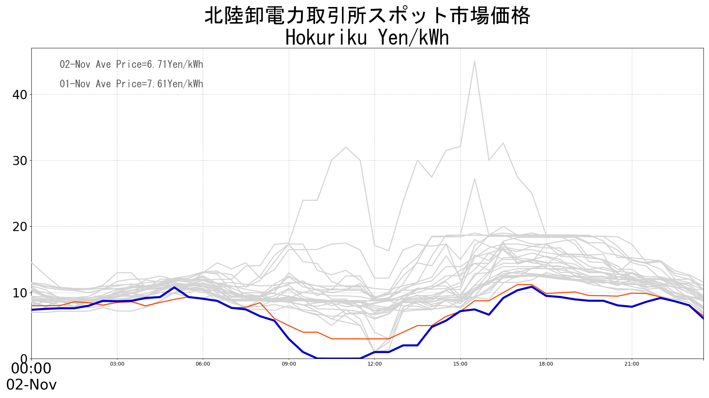
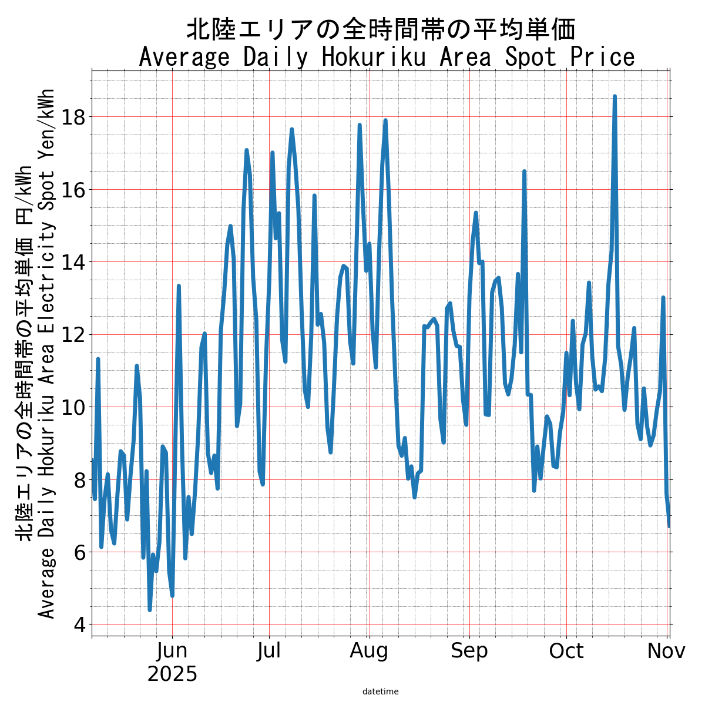
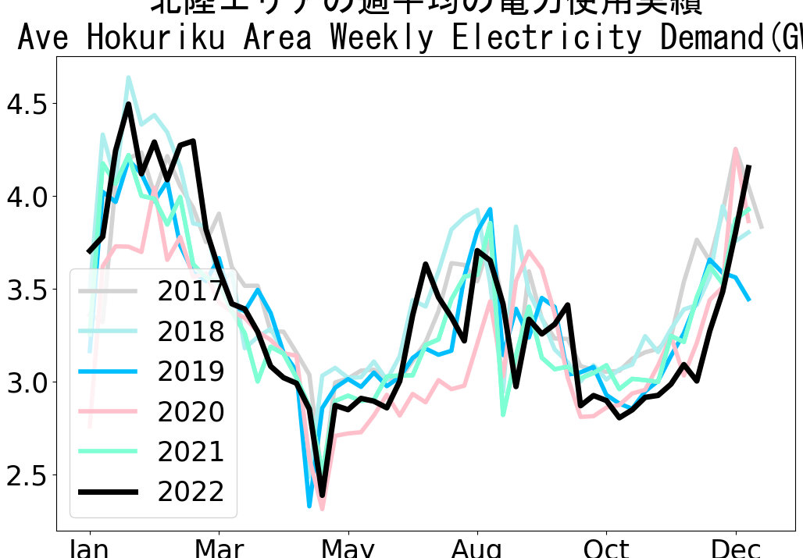

????????????.?????,????????,??????????30??.Spot electricity prices. Blue todays prices,orange day before,Light grey previous 30 days ???????? https://bit.ly/2XNIL9m JMA forecast https://bit.ly/2XMG87W ??????????? Todays Kanto Forecast, https://lnkd.in/gCnkAxM . Source jepx.org #energy #electricity #markets #jepx #japanelectricity #weather #science #jkm #lng

The past 6 months of average daily electricity spot price. Source jepx.org #energy #electricity #markets #jepx #japanelectricity #japan #jkm #lng

Historical weekly average electricity demand. #energy #electricity #markets #jepx #japanelectricity #japan #jkm #lng